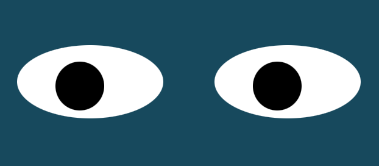

This was an exercise for the 4th week of the MIT xPro program. The assignment was to update the given code so that Pacman hits the wall, turns around, and comes back. We also implemented the setInterval function.

This was an exercise for the 4th week of the MIT xPro program. The assignment was to update the given code so that Pacman hits the wall, turns around, and comes back. We also implemented the setInterval function.
This was an exercise from week 8 of the MIT xPro Program. This assignment combined Javascript, CSS, and HTML to create a webpage where two eyes follow the movement of your mouse.
